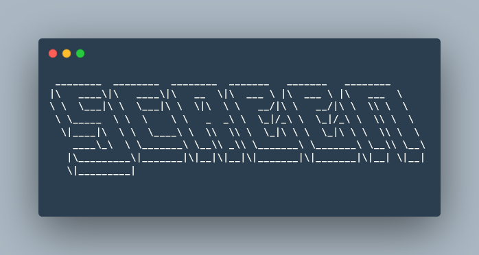
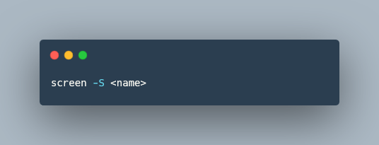
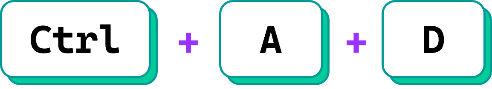
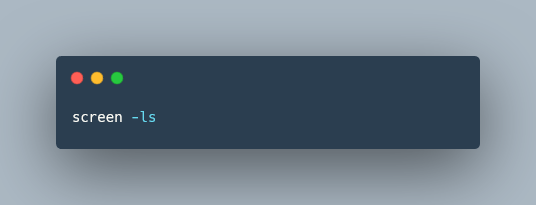
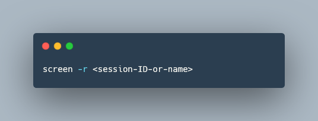
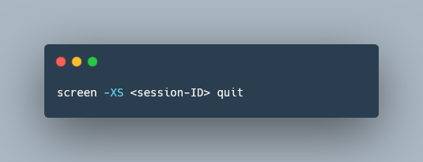
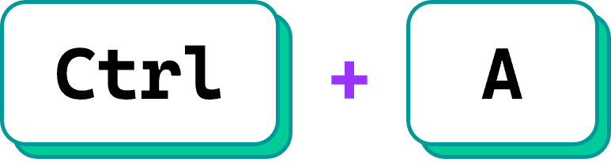
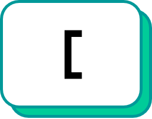
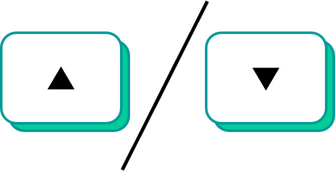
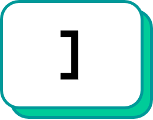

If you are using AWS (or other cloud computing platforms), particularly in an interactive or development mode, you will have experienced the frustration of network disconnects resulting in either termination of processes or loss of access to console output.
Even when running production pipelines that harness AWS batch with workflow managers such as Nextflow it is still valuable to maintain access to console output and messages over the lifetime of the pipelines, which can be days.
Thankfully there is a very simple Linux command that solves all these problems, 🌟 screen 🌟

Screen is a linux utility, known as a terminal multiplier, which in very simple terms, allows you to detach and reattach to different terminal sessions. Importantly this also allows remote processes to continue even after you (purposely or unexpectedly) disconnect.
It is likely that this utility is already installed on your remote instance. Screen comes pre-installed in both the Amazon Linux 2023 and Ubuntu Server 22.04 LTS AMIs.
To get you started I have compiled a few simple commands that should keep your covered.
Starting a screen session
To get started, you’ll want to initiate and label a screen session. While the -S flag and name are optional, it’s advisable to label your session, sparing your brain 🧠 for more meaningful tasks. Here’s how to do it:

Now that you have your screen session set up, you can run your interactive scripts or initiate a pipeline with a workflow manager such as Nextflow. Screen ensures that these processes continue running even if you need to step away, disconnect, or work on other tasks.
Detach from screen session
If you want to step away from your active session to disconnect or to run a different script use the follow keyboard shortcut

List screen sessions
To see a list of available screen sessions

Re-attached to a screen session
To return to an active screen session.

Encountering the error message ‘there is no screen to be resumed’? Don’t worry, there’s a simple solution. If you unexpectedly disconnected from your previous session you may find that screen fails to recognise the detachment. Adding the -d flag to your command can save the day. This flag instructs screen to detach from any existing session before you attempt to reattach. By doing so, you’re ensuring a clean reconnection even in scenarios where your previous session’s state might not have been properly recognized due to an abrupt disconnection.
Terminate a screen session
If you are currently within the screen session you wish to terminate it is as simple as typing exit and hitting enter
If you are detached from the session you want to terminate then you need to pass a quit command through to the relevant screen session using the -X flag.

Scrolling in a screen session
You will soon notice that you cannot scroll inside a screen session as you would in your normal terminal. Initially this is pretty frustrating 😧 especially when you are trying to work through large log files or errors printed to the terminal.
However, there is a simple way to scroll within a screen session. First, use the following keyboard shortcut

Now press

You can now scroll up and down with the keyboard or mouse wheel.

When finished just press q or

This is certainly not the complete list of screen functions. For power users 🧑💻 there is an array of other great features. Maybe something for a future post…